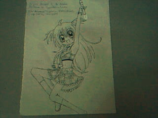

🏠 首頁
📁 網友哈啦區
隨手畫Round 3
👤 darkspinesonic4
🕐 2010-01-23 14:20:12
......總覺得
人類還是好難畫..........
這次挑戰的是這隻!

附件: Picture 13.jpg
還請各位多指教...THANX
👤 s041117
🕐 2010-01-23 14:55:19
請問是花樣明星的女角嗎?[:smile7:]
👤 caicaibia
🕐 2010-01-23 17:15:30
挺不错的~~
腿部关节处能圆滑点就更好了~~
👤 acq445
🕐 2010-01-23 22:37:24
畫得不錯唷!=ˇ=
繼續加油,希望你能畫的越來越進步^^
👤 darkspinesonic4
🕐 2010-01-23 22:57:57
謝謝各位指教~
2#
s041117
那的確是Kirari沒錯
👤 orzilovepm
🕐 2010-01-24 14:36:45
感覺進步很多呢！！ Ouo
上半身的軀體已經很自然了～～非常棒的說！
下半身則是膝蓋稍微厚了些，建議腿部內側可以稍微有些弧度，表現肌肉的自然感
個人稍微推薦高橋留美子老師的作品，她畫的女性素體是非常不錯的參考範例
建議可參考＂亂碼＂這樣...不過不保證看完後心靈不會跟著受污染就是了...
（溜走）